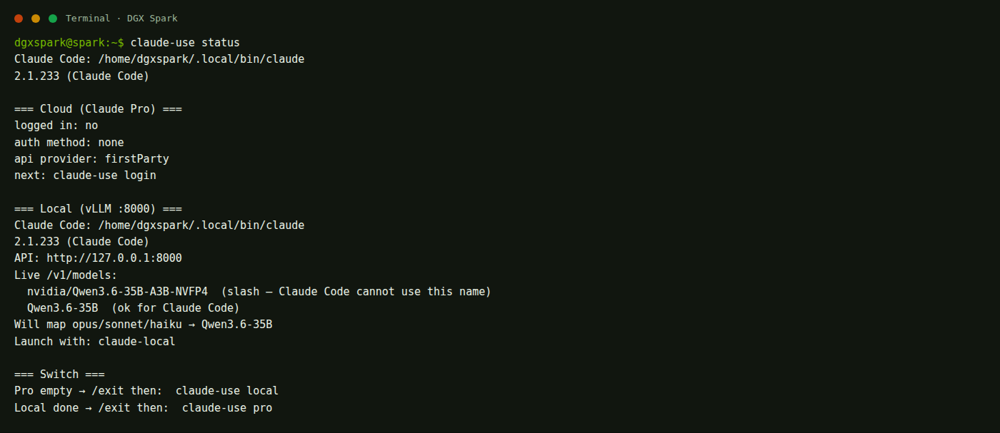
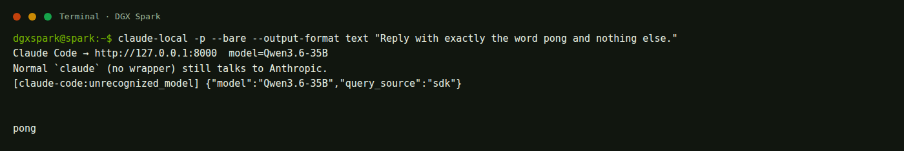

Pro, โมเดลในเครื่อง, และตอนโควตาหมด
เครื่องนี้ยังไม่ล็อกอิน Anthropic ใช้ claude-use สลับเส้นทาง เซสชันหนึ่งอยู่ได้แค่เส้นเดียว ไม่กระโดด Pro ไป local ให้อัตโนมัติ
เลือกเส้นทางก่อนพิมพ์
ล็อกอิน Claude Pro
ใช้โมเดลของ Anthropic ตามแผนที่จ่าย ต้องล็อกอินก่อน
claude-use login → claude-use pro B · โควตาหมดออกจาก Pro แล้วไป local
ดู /usage แล้วออกจากเซสชัน ไม่มีสวิตช์ลับในเซสชันเดียว
โมเดลบนเครื่องนี้
ชี้ไป vLLM พอร์ต 8000 อ่านชื่อสั้นจาก API เอง
claude-use local qwen35| พิมพ์ | ได้ผล | เมื่อไหร่ |
|---|---|---|
claude-use status | บอกว่าล็อกอินหรือยัง และโมเดล local ชื่ออะไร | ก่อนเริ่มทุกครั้ง |
claude-use login | เปิดล็อกอินแผน Claude (ค่าเริ่มต้น --claudeai) | ครั้งแรก หรือหลัง logout |
claude-use pro | เปิด Claude Code ไป Anthropic | มีโควตา |
claude-use local | เปิดกับโมเดลที่กำลังรันบน :8000 | โควตาหมด หรืออยากออฟไลน์ |
claude-use local qwen35 | สลับโมเดลแล้วเปิด local | ยังไม่ได้เปิดโมเดล |
claude-use logout | ออกจากบัญชี Anthropic | ไม่ใช้ Pro บนเครื่องนี้แล้ว |
claude-local | คำสั่งเดิม ชุดเดียวกับ claude-use local | พิมพ์สั้นกว่า |

A · ล็อกอินแล้วใช้ Claude Pro
สถานะบนเครื่องนี้ตอนเขียน: claude auth status = ไม่ได้ล็อกอิน ต้องทำขั้นล็อกอินก่อน
-
เปิดเทอร์มินัลบน DGX
-
ล็อกอินด้วยแผน Claude
claude-use login
คำสั่งนี้เรียก
claude auth login --claudeaiจะเปิดเบราว์เซอร์ให้เข้าบัญชีที่จ่าย Pro / Max / Team -
ถ้าจะจ่ายรายคำขอจาก Anthropic Console แทน
claude-use login --console
คนละบิลกับ Claude Pro ใช้เมื่อมี API key จาก console
-
ตรวจว่าเข้าแล้ว
claude-use status
บรรทัด Cloud ต้องเป็น
logged in: yes -
เข้าโฟลเดอร์โปรเจกต์ แล้วเปิดแบบคลาวด์
cd /path/to/your/project claude-use pro
ต้องเห็นบรรทัด
Claude Code → Anthropic cloudถ้าขึ้นว่าชี้ไป :8000 แปลว่าเผลอเปิด local -
ในเซสชัน ดูโควตา
/usage
หน้านี้บอกว่าแผนเหลือเท่าไร และรีเซ็ตเมื่อไหร่
ANTHROPIC_BASE_URL ใน ~/.claude/settings.json ค่านี้จะลากทั้ง claude และ Pro เข้าเครื่อง แล้วล็อกอินไม่มีผล/model haiku ในเซสชัน หรือเปิดด้วย claude-use pro --model haikuB · โควตา Pro หมด แล้วไป local
Claude Code รุ่นบนเครื่องนี้ ไม่มีสวิตช์อัตโนมัติ จากแผนที่หมดไปหา vLLM ในเซสชันเดียวกัน --fallback-model ใช้ได้แค่โหมด -p/--print และสลับได้แค่โมเดลของ Anthropic ตอนเซิร์ฟเวอร์แน่น ไม่ใช่ตอนแผนหมด
-
ยืนยันว่าแผนหมดจริง
ในเซสชัน Pro พิมพ์
/usageหรืออ่านข้อความว่า hit your limit / usage limit -
ออกจากเซสชัน
พิมพ์
/exitหรือกด Ctrl + C จนกลับเชลล์ -
เปิดโมเดลในเครื่องถ้ายังไม่เปิด
claude-use local qwen35
รอ Ready ถ้ายังโหลด ใช้เวลา 2–6 นาที
-
ถ้าโมเดลเปิดอยู่แล้ว
claude-use local
-
เมื่อแผน Pro รีเซ็ต
ออกจาก local แล้วพิมพ์
claude-use proเซสชันเก่าคนละเส้น อย่าคาดว่าประวัติคลาวด์จะตามมา local
C · ใช้โมเดลในเครื่อง
vLLM บนพอร์ต 8000 พูด Anthropic Messages API ได้ Claude Code จึงใช้ก้อนเดียวกับแชทได้ เปิดโมเดลได้ทีละตัว
-
เลือกโมเดล
งาน คำสั่ง ชื่อที่ Claude ใช้ เขียนโค้ด แนะนำ claude-use local qwen35Qwen3.6-35Bแชทโค้ดทั่วไป claude-use local qwen27Qwen3.6-27Bงานยาว บริบท 500k claude-use local nemotronNemotron-3.5-Lightning -
ตรวจชื่อสั้น
claude-use status
ต้องเห็น
(ok for Claude Code)ชื่อที่มี/ใช้กับ Hermes ได้ แต่ Claude Code ใช้ไม่ได้ -
เข้าโฟลเดอร์งาน แล้วเปิด
cd /path/to/your/project claude-use local
ต้องเห็น
Claude Code → http://127.0.0.1:8000 model=...

สลับโมเดล local และกลับไป Pro
-
ออกจากเซสชันที่เปิดอยู่
พิมพ์
/exit -
สลับโมเดลในเครื่อง
claude-use local nemotron
-
กลับไป Pro
claude-use pro
ถ้าขึ้นว่ายังไม่ล็อกอิน ให้รัน
claude-use loginก่อน
claude-use pro ค้าง แล้วไปรัน start-qwen35 ในอีกแท็บ คนละเส้นทาง โมเดล local ไม่ได้ถูกใช้โดยเซสชัน Pro แต่จะกิน RAM ทับเครื่องสิ่งที่ทำไม่ได้ และวิธีเพิ่มโมเดล
สิ่งที่คนมักเข้าใจผิด
--fallback-model haikuไม่ได้พาไป Qwen ใช้ได้เฉพาะclaude -p --fallback-model sonnet,haikuเมื่อโมเดลหลักของ Anthropic แน่น- พิมพ์แค่
claudeหลังตั้งANTHROPIC_BASE_URLทั้งเครื่อง จะไม่กลับไป Pro - Hermes ที่ :18789 คนละโปรแกรม อย่าสับสนกับ Claude Code
เพิ่มโมเดล local ในอนาคต
-
ใส่โปรไฟล์ใน compose พร้อมชื่อสั้นไม่มี /
- --served-model-name - MyNewModel - --enable-auto-tool-choice
-
สร้าง
start-mynewที่เรียกllm start mynew -
เปิดด้วย
claude-use local mynewwrapper อ่าน
/v1/modelsเอง ไม่ต้องแก้ไฟล์ Claude
ปัญหา
Not signed in
รัน claude-use login แล้วรอเบราว์เซอร์จบ อย่าเปิด claude-use pro ก่อน
เผลอเข้า local ทั้งที่อยากได้ Pro
ออกจากเซสชัน ตรวจว่าไม่มี ANTHROPIC_BASE_URL ใน settings แล้วใช้ claude-use pro อย่างเดียว
No model is listening
รัน claude-use local qwen35 แล้วรอ Ready
Model not found / 404
ชื่อมี / ดู claude-use status ต้องมีชื่อสั้น
คิดว่า fallback อัตโนมัติพัง
ไม่ได้พัง เครื่องนี้ไม่มีโหมดนั้น ทำตามหมวด โควตาหมด